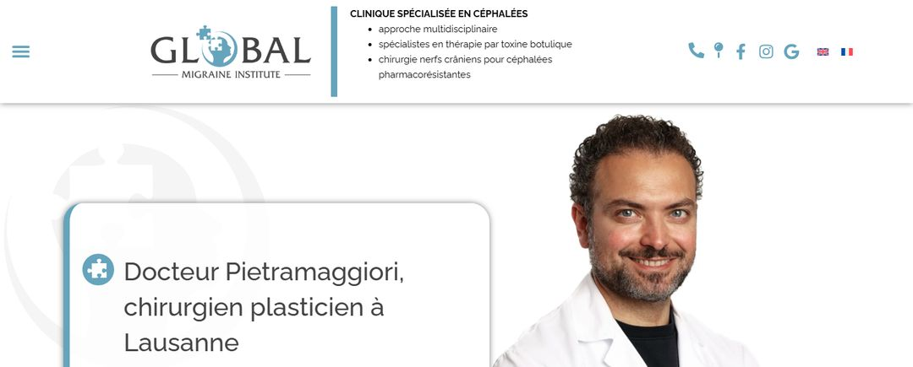

- Accueil
- Référencement Google
- Référencement chirurgien esthétique Suisse
Référencement · Suisse
Référencement d'un chirurgien esthétique en Suisse : ce qui change.
Vous êtes chirurgien plasticien à Genève, à Lausanne ou ailleurs en Suisse. Le référencement d'un chirurgien esthétique en Suisse repose sur la même méthode qu'en France, avec cinq différences : Google.ch, les langues, le titre FMH, les plateformes locales et le cadre de communication. Voici ce qui change, concrètement.
Mis à jour le · Réseau HANA

- En Suisse, le référencement d'un chirurgien esthétique suit la même méthode qu'en France : pages d'interventions, site technique propre, fiche Google, notoriété, visibilité dans les IA.
- Les recherches se font sur Google en Suisse (google.ch), en français en Suisse romande, en allemand en Suisse alémanique.
- Le titre de spécialiste FMH en chirurgie plastique, reconstructive et esthétique doit apparaître sur le site, la fiche Google et chaque profil.
- La loi fédérale sur les professions médicales demande une publicité objective, qui répond à l'intérêt général, sans induire en erreur ni importuner.
- Le prix HANA est le même partout : 2 050 € HT par mois, en euros.
Ce qui change en Suisse
Référencement d'un chirurgien esthétique en Suisse : cinq différences.
Le référencement naturel (SEO) consiste à faire apparaître votre cabinet sur Google quand un patient cherche une intervention que vous pratiquez, sans payer de publicité. En Suisse, le principe est le même qu'en France. Cinq points demandent une attention particulière.
- 01Google en Suisse
Un patient de Genève voit d'abord des cabinets proches de lui. Vos concurrents sont les confrères de votre ville, pas ceux de Lyon.
- 02Plusieurs langues
Français en Suisse romande, allemand en Suisse alémanique, italien au Tessin. On cherche dans sa langue.
- 03Le titre FMH
Le titre de spécialiste FMH est un repère de confiance pour vos patients. Il doit se voir partout.
- 04Des plateformes locales
Annuaires et sites de rendez-vous suisses : Google et les IA les recoupent avec votre site.
- 05Un cadre propre
La communication des médecins suit des règles suisses, fédérales et parfois cantonales.
Les langues
Dans quelle langue écrire votre site ?
Un patient tape sa recherche dans sa langue. « Chirurgien plasticien Genève » et « Schönheitschirurg Zürich » sont deux mondes différents. La langue de votre site dépend donc d'où viennent vos patients.
| Votre cabinet | Langue des recherches | Ce que nous conseillons |
|---|---|---|
| Genève, Lausanne, Neuchâtel | Français | Site en français, pages par intervention |
| Fribourg, Bienne, Valais | Français et allemand | Les deux langues, chacune avec ses propres pages |
| Zurich, Bâle, Berne | Allemand | Site en allemand d'abord |
| Patients venant de France | Français | Pages pensées pour le patient qui vient de l'autre côté de la frontière |
Un site en deux langues n'est pas un site traduit automatiquement. Chaque version a ses propres pages, écrites avec les mots que tapent les patients de cette langue, et Google sait laquelle montrer à qui. Les pages en allemand sont rédigées par une traductrice spécialisée, à partir des pages françaises que vous avez validées, puis relues par vous.
Le titre FMH
Votre titre FMH, visible partout.
En Suisse, le titre de spécialiste FMH en chirurgie plastique, reconstructive et esthétique est un repère clair pour vos patients : il dit votre spécialité en quelques mots. Les IA comme ChatGPT peuvent le reprendre quand il est écrit de la même façon partout.
Une règle à respecter : on ne mentionne que les titres que l'on détient réellement. Le sigle « FMH » est réservé aux membres de la FMH, et un titre obtenu à l'étranger doit en principe être reconnu en Suisse avant d'être affiché. Nous vérifions avec vous l'intitulé exact avant de l'écrire.
Nous l'écrivons au même endroit et dans les mêmes mots sur :
- Votre page « parcours » et le pied de chaque page d'intervention
- Votre fiche Google
- Les annuaires et plateformes de rendez-vous où vous apparaissez
- Les données structurées du site (des informations lisibles par Google, invisibles pour le patient)
- Votre profil LinkedIn et la page de la clinique où vous opérez
Les plateformes suisses
Les mêmes informations, partout.
Google et les IA recoupent ce qu'ils lisent sur vous. Si votre adresse, votre titre ou vos interventions diffèrent d'un site à l'autre, ils vous font moins confiance. En Suisse, les sources à aligner sont surtout :
- votre site et votre fiche Google ;
- les annuaires suisses, comme local.ch ou search.ch ;
- les plateformes de rendez-vous en ligne, comme OneDoc ou Doctena, si vous les utilisez ;
- la page de la clinique où vous opérez et celle de votre société savante ;
- LinkedIn, YouTube et vos autres réseaux.
Nous mesurons chaque mois ce que ChatGPT, Gemini et Perplexity répondent quand un patient cherche un chirurgien dans votre ville. Le détail est sur la page Visibilité dans les IA.
Le cadre suisse
Ce qu'un chirurgien peut écrire en Suisse.
La loi fédérale sur les professions médicales universitaires (LPMéd) demande au médecin qui exerce sous sa propre responsabilité une publicité objective, qui répond à l'intérêt général, et qui ne doit ni induire en erreur ni importuner. Les lois cantonales reprennent ce principe, et le code de déontologie de la FMH, plus détaillé, demande en plus de la retenue et de la modestie.
À Genève et dans le canton de Vaud
Les grandes règles valent pour toute la Suisse, mais la tolérance des autorités varie d'un canton à l'autre. Les sociétés cantonales de médecine, l'AMGe à Genève et la SVM dans le canton de Vaud, peuvent aussi ajouter leurs propres règles. En cas de doute, la FMH recommande de demander conseil à la société cantonale ou au service cantonal de la santé. Avant de publier une page sensible, nous vérifions les règles de votre canton.
Les avis de vos patients
Point important en Suisse : la FMH considère l'utilisation de recommandations de patients comme une atteinte à la réputation de la profession. Les commentaires laissés sur Google ou sur les plateformes d'évaluation ne doivent donc pas servir d'argument publicitaire sur votre site. Votre fiche Google peut recevoir des avis ; votre site, lui, ne les met pas en avant.
Concrètement, votre site informe : votre parcours, vos qualifications, vos interventions, leurs suites, leurs limites et leurs risques. Voici ce que nous n'écrivons jamais.
- Une promesse de résultat, « sans cicatrice » ou « sans douleur »
- Des superlatifs ou des comparaisons avec vos confrères
- Des remises, des forfaits ou des offres limitées
- Des avant-après utilisés comme argument
- Des avis rédigés par l'agence ou achetés
- Des avis ou témoignages de patients utilisés comme argument
- Un titre que vous ne détenez pas, ou le sigle FMH sans être membre
- Des promesses qui éveillent des espoirs exagérés
Une référence en Suisse
Un chirurgien plasticien à Lausanne.
Nous avons accompagné le Dr Pietramaggiori, chirurgien plasticien à Lausanne, spécialisé en chirurgie de la migraine. Une spécialité rare, qui demande d'expliquer simplement une intervention que peu de patients connaissent.
Son site est visible avec les autres sur notre page Références. Les cas chiffrés, nous les présentons en visio, anonymisés.

Les premiers mois
Comment nous démarrons avec un cabinet suisse.
- M1L'audit
Votre site, votre fiche Google, vos profils sur les annuaires suisses : ce qui est juste, ce qui diffère, ce qui manque.
- M2Les fondations
Titre FMH et coordonnées rendus identiques partout, site remis à niveau, langue de chaque page choisie.
- M3Les pages
Une intervention à la fois, en commençant par celles que vous voulez développer, dans votre ville.
Vous relisez chaque page avant sa mise en ligne. Rien n'est publié sans votre accord, et vous suivez tout depuis l'Espace HANA, votre tableau de bord ouvert 24 h/24.
Prix et méthode
Combien coûte le référencement d'un chirurgien esthétique en Suisse ?
Le prix est le même qu'en France, et il est exprimé en euros hors taxes : 2 050 € HT par mois, tout compris. La création ou la refonte du site est à part, à partir de 2 000 € HT, facturée une fois. La facturation se fait en euros ou en francs suisses, comme vous le préférez.
- 01Un seul par ville
Un seul chirurgien plasticien par ville. Nous ne signerons jamais votre concurrent direct.
- 02La même méthode
Pages d'interventions, contenus experts, fiche Google, vidéos, visibilité IA. Le détail sur Référencement Google.
- 03À distance
Un interlocuteur unique, une visio de 30 minutes par mois, l'Espace HANA ouvert 24 h/24.
Aucune position n'est garantie. Les premiers effets se mesurent en général entre le 4e et le 6e mois. Après six mois, vous pouvez arrêter avec un mois de préavis : votre site, vos textes et votre fiche Google restent à vous. Tout est sur la page Tarifs.
Questions fréquentes
Les questions qui reviennent.
Comment être référencé sur Google en Suisse quand on est chirurgien esthétique ?
Avec une page claire par intervention, écrite dans la langue de vos patients, une fiche Google complète, votre titre FMH visible partout et des informations identiques sur les annuaires suisses où vous apparaissez.
Le référencement à Genève ou Lausanne est-il différent de la France ?
La méthode est la même. Ce qui change : les résultats de Google en Suisse, les annuaires et plateformes locales, le titre FMH à mettre en avant et le cadre de communication suisse.
Faut-il un site en allemand ?
Si vous recevez des patients de Suisse alémanique, oui : ils cherchent en allemand. Pour un cabinet à Genève ou Lausanne, le français suffit souvent au départ.
Un chirurgien en Suisse peut-il faire de la publicité ?
La loi fédérale sur les professions médicales demande une publicité objective, qui répond à l'intérêt général, sans induire en erreur ni importuner. Des règles cantonales peuvent s'ajouter. Nous restons sur de l'information.
Combien coûte le référencement d'un chirurgien esthétique en Suisse ?
Chez HANA, 2 050 € HT par mois, le même prix qu'en France, facturé en euros ou en francs suisses comme vous le préférez. La création ou la refonte du site est à part, à partir de 2 000 € HT.
Travaillez-vous déjà en Suisse ?
Oui. Nous avons accompagné un chirurgien plasticien à Lausanne, le Dr Pietramaggiori, spécialisé en chirurgie de la migraine. Son site est visible sur notre page Références.


Ma ville est-elle libre ?
Parlons de votre ville en Suisse.
Votre ville, votre nom, votre téléphone : c'est tout. Sous 48 h ouvrées, nous vous rappelons pour vous dire si votre ville est encore libre. Et nous vous offrons votre diagnostic de visibilité : où vous apparaissez sur dix recherches que font vos patient(e)s, l'état de votre fiche Google, et ce que ChatGPT et Gemini répondent aujourd'hui à quelqu'un qui cherche un chirurgien plasticien chez vous.
Ensuite, trente minutes en visio pour en parler. Nous vous montrons deux cas chiffrés et anonymisés, issus de projets que nous avons menés. Si c'est pertinent, nous vous faisons une proposition, ou un devis pour votre site. Sans engagement.
- 06 99 30 58 73Réseau HANA. Du lundi au vendredi, 9 h à 19 h.
- contact@hanahealth.frRéponse sous 24 h ouvrées.
- France, Belgique, SuisseRendez-vous en visio, où que vous soyez.